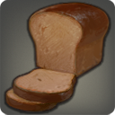

Archon Loaf

All of the neccesary nutrients a studious scholar needs in each slice
It happened again, you lost yourself in your studies the entire day while depriving your body of it's required nutrients. The clock is well past midnight but you feel you need something quick as taking the time to make food would waste precious time that could be spent learning, This is where archon loaf comes in. Each slice is guaranteed to have everything needed so you can quickly resume learning. What it lacks in flavor it makes up for in time saved!
ingredients
- 3-4 Cups Of Dark Rye Flour
- 1 Northern Herring
- 1 Handful of Mist Spinach
- 2 Purple Carrots
- water as needed
How to make
- Put 3-4 cups of dark rye flour into large mixing bowl and set aside
- Filet Northern herring making sure all bones and innards are removed leaving only the meat, once the fish is fileted proceed to dice fish, then cook it on medium heat in a nonstick pan until partially cooked
- Peel purple carrots and remove the stems, proceed to slice carrots and dice them
- Finely chop the mist spinach
- Put diced northern herring, Diced Purple carrot, and chopped mist spinach into a food proccessor and run processor until everything is finely ground and evenly mixed
- Add the mixture into the large bowl with the dark rye flower and mix until even
- Once mixed, add water and mix until ball of dough forms
- Put Dough into a medium sized loaf pan lined with nonstick spray
- Bake at 350 Degrees F (175 degrees C) for 30-40 minutes
- Let cool for 30-40 minutes then slice
- Eat when needed and resume studies!